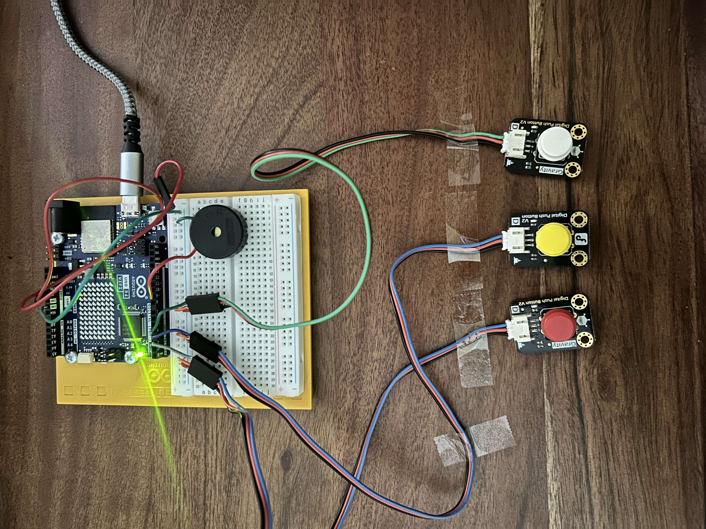
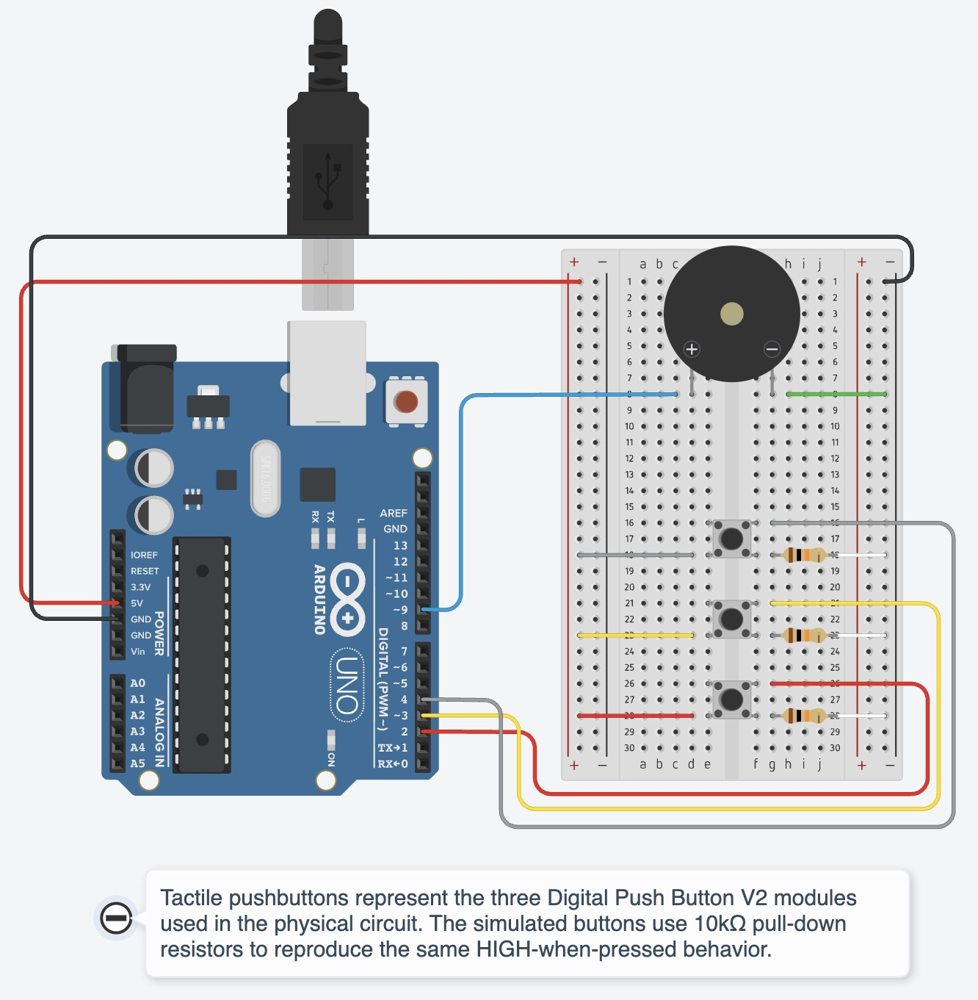

Musical Memory Game
Experience Goal
For Soundie, I wanted to create a game where sound was the main part of the interaction rather than just an added effect. My goal was to challenge players to listen to a short sequence of notes and repeat it using three buttons. As the sequences get longer, the player has to rely on their listening skills and memory to keep going.
How It Works
The game uses an Arduino Uno, three Digital Push Button V2 modules, and one piezo. Each button corresponds to a different musical note: C4, E4, or G4. The player presses any button to begin, and the piezo plays an opening melody followed by the first note to remember.
After listening, the player repeats the sequence using the buttons. Each correct round adds another note, up to five rounds. A short melody confirms a correct answer, while a descending sound signals a mistake. Completing all five rounds triggers a victory melody. After either outcome, the game waits for the player to press a button to start again.
Building and Testing
I reused the Arduino, breadboard, and piezo from my earlier Project Runway witch hat, removing the tilt sensor and adding two more Digital Push Button V2 modules. Each button connects to 5V, ground, and its own digital input pin (D2, D3, or D4). The piezo connects to D9 and ground.
I started by testing the three buttons in the Serial Monitor to make sure each one registered correctly. Next, I assigned each button a different note and confirmed that the single piezo could play all three. Once those tests worked, I programmed the game to generate a random sequence, compare it with the player's input, and add a note after each successful round.
Finally, I refined the interaction by adding a press-any-button-to-start feature and separate opening, success, failure, and victory melodies. This made the game feel more complete and gave players clear audio feedback without needing a screen or LEDs.
Issues and Discoveries
One design challenge was making the game understandable without visual feedback. Because I chose not to use LEDs, each button needed a recognizable note, and the sounds for starting, succeeding, losing, and winning needed to feel different. I used three distinct pitches and short melodies to communicate what was happening.
I also learned that a single piezo could produce every sound needed for the game by changing the frequency and duration in code. I originally considered adding LEDs, but decided to keep the first version entirely audio-based so listening would remain the focus.
For the circuit diagram, Tinkercad does not provide the same three-wire Digital Push Button V2 modules used in my physical build. The diagram therefore uses standard tactile pushbuttons as substitutes, with pull-down resistors to represent the same HIGH-when-pressed behavior. The physical build uses the modules' +, −, and D connections instead.
Process & Result
Final Circuit
This photo shows the completed three-button setup with the Arduino and piezo.

Gameplay Demonstration
The demonstration shows the start interaction, musical sequences, player responses, and the different feedback sounds.
Musical Memory Game — Gameplay Demonstration
Circuit Diagram
I recreated the circuit in Tinkercad to document the Arduino, piezo, and three button inputs. The small tactile buttons in this diagram stand in for the Digital Push Button V2 modules in the physical project. Each simulated button uses a pull-down resistor so its input is LOW when released and HIGH when pressed.

Final Code
The Arduino generates a five-note sequence, plays one additional note each round, and checks the player's input against the stored sequence. The same piezo also produces the game's opening and feedback melodies.
const int buttons[3] = {2, 3, 4};
const int notes[3] = {262, 330, 392};
const int piezo = 9;
const int maxRounds = 5;
int sequence[maxRounds];
int roundNumber = 1;
void playNote(int frequency, int duration) {
tone(piezo, frequency, duration);
delay(duration + 50);
noTone(piezo);
}
void waitForStart() {
bool released = false;
while (!released) {
released = true;
for (int i = 0; i < 3; i++) {
if (digitalRead(buttons[i]) == HIGH) released = false;
}
delay(10);
}
bool started = false;
while (!started) {
for (int i = 0; i < 3; i++) {
if (digitalRead(buttons[i]) == HIGH) {
started = true;
break;
}
}
delay(10);
}
delay(200);
bool stillPressed = true;
while (stillPressed) {
stillPressed = false;
for (int i = 0; i < 3; i++) {
if (digitalRead(buttons[i]) == HIGH) stillPressed = true;
}
delay(10);
}
}
void startSound() {
playNote(262, 130);
playNote(330, 130);
playNote(392, 200);
delay(300);
}
void playSequence() {
delay(500);
for (int i = 0; i < roundNumber; i++) {
playNote(notes[sequence[i]], 350);
delay(150);
}
}
int waitForButton() {
while (true) {
for (int i = 0; i < 3; i++) {
if (digitalRead(buttons[i]) == HIGH) {
playNote(notes[i], 250);
while (digitalRead(buttons[i]) == HIGH) delay(10);
delay(100);
return i;
}
}
}
}
void successSound() {
playNote(523, 120);
playNote(659, 180);
}
void loseSound() {
playNote(392, 200);
playNote(330, 200);
playNote(262, 400);
}
void winSound() {
playNote(392, 150);
playNote(523, 150);
playNote(659, 150);
playNote(784, 200);
delay(100);
playNote(784, 350);
}
void newGame() {
roundNumber = 1;
for (int i = 0; i < maxRounds; i++) {
sequence[i] = random(0, 3);
}
}
void setup() {
for (int i = 0; i < 3; i++) pinMode(buttons[i], INPUT);
pinMode(piezo, OUTPUT);
randomSeed(analogRead(A0));
}
void loop() {
waitForStart();
startSound();
newGame();
bool gameOver = false;
while (!gameOver) {
playSequence();
bool correct = true;
for (int i = 0; i < roundNumber; i++) {
int pressedButton = waitForButton();
if (pressedButton != sequence[i]) {
correct = false;
break;
}
}
if (!correct) {
loseSound();
gameOver = true;
} else if (roundNumber == maxRounds) {
winSound();
gameOver = true;
} else {
successSound();
roundNumber++;
delay(700);
}
}
delay(500);
}Results and Reflection
The final game works with three buttons and one piezo, without any LEDs or additional audio hardware. I tested the buttons, note playback, memory sequence, and start interaction successfully. The result is a small game where the audio provides both the challenge and the feedback. A future version could add LEDs as an optional visual aid, but I like that this version asks the player to focus on what they hear.
References
- IGME 470 course assignment and in-class Arduino exercises.
- Arduino
tone()reference — generating notes with a piezo. - Arduino
random()reference — generating the memory sequence. - Tinkercad — circuit documentation.